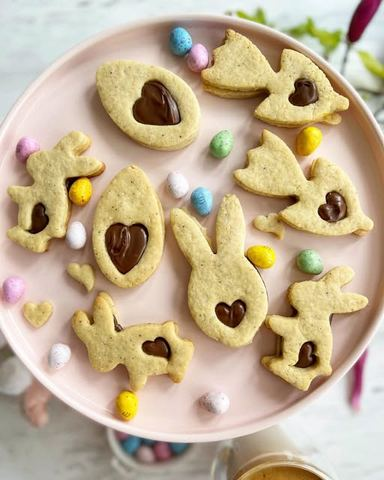

Prvi u nizu kolačića koji su obožavani za prazničnom trpe…

Moja beleška
SačuvanoPrvi u nizu kolačića koji su obožavani za prazničnom trpezom. Oni, koje možete pripremiti i nekoliko dana ranije, samo se svojski potrudite da ne nestanu pre Uskrsa 🥰 Ja sam oduševljena ukusom. Dečica ga obožavaju. Testu posebnu notu daju mleveni badem i malčice cimeta, a kremkani su nutella kremom, tako da ih svi vole 🥰 Za pripremu testa će vam trebati svega par minuta, za rernu samo 8, jedino što ćete morati da sačekate jeste sat vremena kako bi se testo u frižideru ohladilo da bi ste mogli sa njim lepo da radite.
Sastojci
- Recept
Priprema
Potrebno je da u blenderu (ja sam koristila nutribulet) sameljete bademe zajedno sa kristal šećerom, pa u to dodajte brašno promešano sa cimetom, soli i pzp-om, a onda to sjedinite. Puter, sobne temperature mikserom penasto umutite, pa mu dodajte ekstrakt vanile, jaje i žumance. Opet lepo umutite, dodajte suve sastojke i testo podelite na dva dela. Inače je jako mekano i puterasto u ovoj fazi da vas to ne buni. Oba dela testa umotajte u providnu foliju pa ostavite u frižideru minimum sat vremena, a možete i nešto duže dok se lepo ne stegne. Na podlozi uz dodatak brašna po potrebi, razvucite tanko testo oklagijom i vadite oblike. Obavezno neka vam podloga bude pobrašnjena, kao i oklagija. Na pek papir rasporedite oblike i pecite tačno 8 minuta na 180C u prethodno zagrejanoj rerni. Ja sam se ovog puta odlucila za leptiriće, proleće i mislim da će biti sjajan izbor za Uskrs. Pa eto predloga ☺️ Prohladjene kremkate, spajate i po želji posipate šećer u prahu. Od kada imam decu ovaj period godine nam je posebno lep i rado ih uključim u pripremu i kremkanje, jer tako stvaramo slatke uspomene. O neredu ćemo drugi put 🙈 Lep dan vam želim 🦋🌸💓
Originalni opis sa Instagrama
Prvi u nizu kolačića koji su obožavani za prazničnom trpezom. Oni, koje možete pripremiti i nekoliko dana ranije, samo se svojski potrudite da ne nestanu pre Uskrsa 🥰 Ja sam oduševljena ukusom. Dečica ga obožavaju. Testu posebnu notu daju mleveni badem i malčice cimeta, a kremkani su nutella kremom, tako da ih svi vole 🥰 Za pripremu testa će vam trebati svega par minuta, za rernu samo 8, jedino što ćete morati da sačekate jeste sat vremena kako bi se testo u frižideru ohladilo da bi ste mogli sa njim lepo da radite. 📝Recept: •100 gr blanširanih badema (ili listića badema) •110 gr kristal šećera •350 gr belog, mekog brašna tip 400 •1/2 kašičice praška za pecivo •1/2 kašičice soli •1 kašičica cimeta •225 gr omeksalog putera •2 kašičice ekstrakta vanile •1 veće jaje i još jedno žumance •bono lešnik krem Potrebno je da u blenderu (ja sam koristila nutribulet) sameljete bademe zajedno sa kristal šećerom, pa u to dodajte brašno promešano sa cimetom, soli i pzp-om, a onda to sjedinite. Puter, sobne temperature mikserom penasto umutite, pa mu dodajte ekstrakt vanile, jaje i žumance. Opet lepo umutite, dodajte suve sastojke i testo podelite na dva dela. Inače je jako mekano i puterasto u ovoj fazi da vas to ne buni. Oba dela testa umotajte u providnu foliju pa ostavite u frižideru minimum sat vremena, a možete i nešto duže dok se lepo ne stegne. Na podlozi uz dodatak brašna po potrebi, razvucite tanko testo oklagijom i vadite oblike. Obavezno neka vam podloga bude pobrašnjena, kao i oklagija. Na pek papir rasporedite oblike i pecite tačno 8 minuta na 180C u prethodno zagrejanoj rerni. Ja sam se ovog puta odlucila za leptiriće, proleće i mislim da će biti sjajan izbor za Uskrs. Pa eto predloga ☺️ Prohladjene kremkate, spajate i po želji posipate šećer u prahu. Od kada imam decu ovaj period godine nam je posebno lep i rado ih uključim u pripremu i kremkanje, jer tako stvaramo slatke uspomene. O neredu ćemo drugi put 🙈 Lep dan vam želim 🦋🌸💓 • • • #linceri #puterkolačići #mirisenadobro #mirisenaljubav #uskrs #uskrsnjikolaci #slatkisi #slatkirecepti #idejezadezert #mojirecepti #zadovoljnahr #zadovoljnars #idejezauskrs